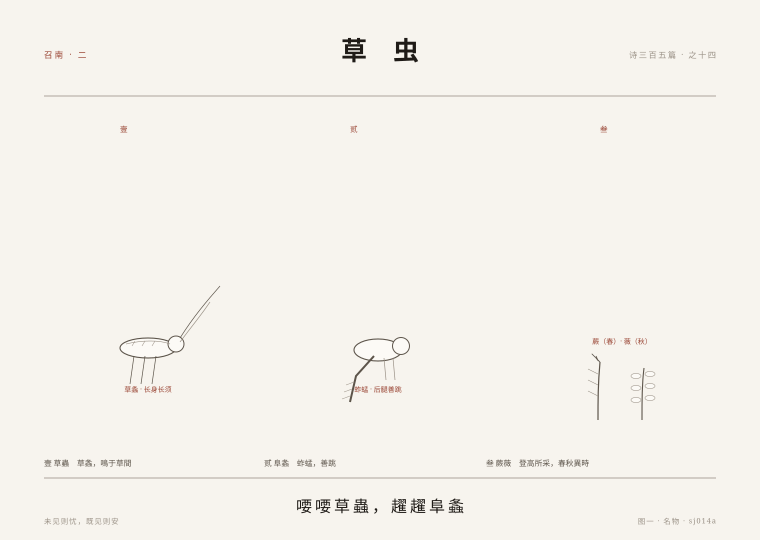
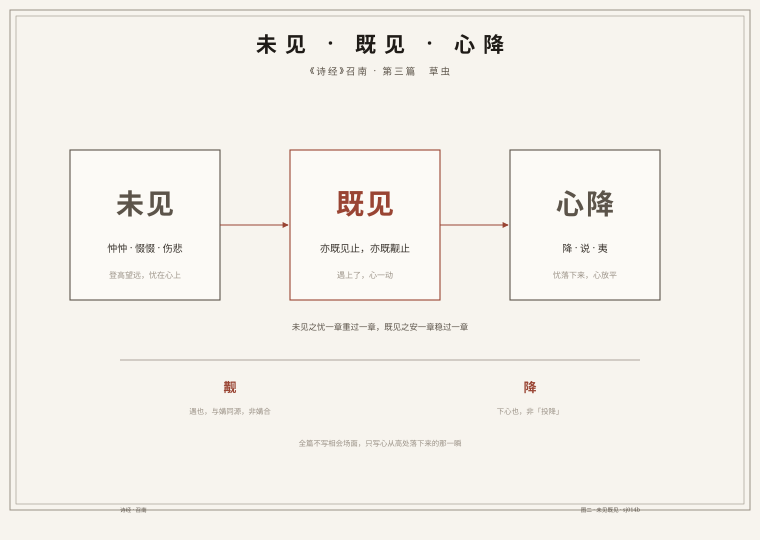

第十四篇 草虫
召南 · 之二 SJ014
朗读 · 普通话
依经文原文朗读，章次不读出；配古琴底乐，不改速、不加拖腔。全库同一音色（豆包 TTS），非播音员录制。
一 解题
诗三判：
- 谁在说：一个登高望远、等候所思之人的人。三章都是她（或他）的心事：未见时怎样，既见时怎样。
- 说什么事：听见草虫鸣叫、阜螽跳跃，想起君子；登南山采蕨、采薇，时节由春入秋；未见则忧，既见则安。
- 为何编在此：《鹊巢》《采蘩》写「家已成、祭已奉」；此篇写成之后那一段「等待与相属」的心思。召南诸篇写「已成之后靠什么维持」，此篇维持的是两个人之间的那一点牵系。
《毛序》：「《草虫》，大夫妻能以礼自防也。」——把此篇归入「大夫妻」之德，以礼自守。
朱子《诗集传》：「诸侯大夫行役在外，其妻独居，感时物之变，而思其君子如此。」——朱子把说话者定为行役者之妻，所感在「时物之变」。
本库的看法：这首诗的骨在「未见—既见」的落差。
三章每章都是前半写未见之忧（忡忡、惙惙、伤悲），后半写既见之安（降、说、夷）。忧是真忧，安也是真安；全篇不写相会的场面，只写心从高处落下来的那一瞬。
二 经文
第一章
喓喓草蟲，趯趯阜螽。未見君子，憂心忡忡。亦既見止，亦既覯止，我心則降。
第二章
陟彼南山，言采其蕨。未見君子，憂心惙惙。亦既見止，亦既覯止，我心則說。
第三章
陟彼南山，言采其薇。未見君子，我心傷悲。亦既見止，亦既覯止，我心則夷。
分章：毛传、朱子皆三章，章十句。三章章法全同：先起兴或记事，再写未见之忧，再写既见之安。形式复沓，只换忧安的字——由虫鸣而登山，由蕨而薇，时节推移；心的起落却一章比一章写得分明。
三 韵读
| 一 |
螽、忡、降 |
冬部 |
| 二 |
蕨、惙、說 |
月部 |
| 三 |
薇、悲、夷 |
微部（脂微合韵） |
首章冬部沉而闷，正合「忡忡」的压在心口；次章月部入声，短促，像惙惙的喘；三章微部舒缓，收在「夷」字上——「夷」是这一篇的落脚声：心平了。
四 字义名物
- 喓喓（yāo yāo）——虫鸣声。
- 草蟲——草螽，蝈蝈一类。不是泛指一切虫；与下句阜螽对举，是两种鸣虫。
- 趯趯（tì tì）——跳跃貌。
- 阜螽（fù
zhōng）——蚱蜢。不是「阜」是土山；阜螽即螽斯之属，善跳。
- 君子——所思之人，妇人对其夫之称。不是「有德位者」的泛称。
- 忡忡——忧愁不安，心在跳动。
- 既——已经。止——语助，犹「矣」。
- 覯（gòu）——遇，遇见。与「媾」同源；不是「交媾」之媾，此处只作「遇」讲。
- 降（xiáng）——下，放下。忧心降下。不是「投降」。
- 陟——登。
- 言——语助，无实义。
- 蕨——蕨菜，初生如拳，可食。
- 惙惙（chuò chuò）——忧短气貌。
- 說——通「悦」，悦怿。
- 薇——野豌豆苗，蔓生，嫩苗可食。
- 夷——平，心安。
五 今译
第一章
草螽喓喓地叫，蚱蜢趯趯地跳。没见到君子，忧心忡忡。已经见到了，已经遇上了，我的心这才放下。
第二章
登上那座南山，去采蕨菜。没见到君子，忧心惙惙。已经见到了，已经遇上了，我的心这才喜悦。
第三章
登上那座南山，去采薇菜。没见到君子，满心伤悲。已经见到了，已经遇上了，我的心这才平和。
译注：「降」译「放下」，「说」译「喜悦」，「夷」译「平和」——三字是心落下来的三个层次：先降，再悦，终平。「觏」译「遇上」，不作「媾合」解。
六 章旨
一章：虫鸣起忧。草虫鸣、阜螽跳，物各相从；人独未见，忧从中来。
二章：登山采蕨。登高望远，时节换了；忧比首章更短、更促。
三章：登山采薇。由蕨而薇，时已入秋；忧到极处是「伤悲」，既见则平。
三章合起来是一条心的弧线：未见之忧一章重过一章（忡忡→惙惙→伤悲），既见之安一章稳过一章（降→说→夷）。
起兴的物由地面虫鸣升到山上草木，人的目光也随之由近及远。
七 诗教
- 兴：以草虫、阜螽之相从起兴——虫犹有偶，人独思君子；次二章以登山采薇蕨起兴，所兴即所望。
- 观：可观一「待」。全篇写等待，不写怨骂；忧是牵着人，不是摧垮人。
- 群：所思是一人，所感是众人皆有的那一段「未见」。读此诗者，各以自己的等待填入。
- 怨：怨而不怒。三章无一句责君子不归，只反复说自己的心；怨在心里，未出口。
八 分寸与边界
- 不可把「草虫」读作泛指的昆虫。它与「阜螽」对举，是草螽（蝈蝈类）与蚱蜢两种；混为一物，首章的对举就塌了。
- 不可把「觏」解作「媾合」。毛传「觏，见也」，与「媾」同源而义各有当；此处只作遇见讲。
- 不可把「降」读作「投降」。降是下心，忧心降下；与成败、屈服无关。
- 不可把此篇坐实为「大夫妻以礼自防」的德教证明。《毛序》之说属于汉人的妇德论；诗里只有虫鸣、登山、采蕨采薇与一颗起落的心。
- 不可把「未见—既见」读成一场叙事。诗中不写相会之地、相见之状，只写心的落差；补出场面，便是添字。
九 存疑
- 说者身份：《毛序》以为大夫妻，朱子以为行役者之妻，一说即思妇本人自述。本库不坐实身份，只取「等候所思者」。
- 「草虫」之属：一说草螽（蝈蝈），一说即阜螽一类；《说文》以「草虫」为「負蟲」。本库从毛传、朱子，取草螽与蚱蜢对举。
- 「降」之古读：降在冬部，与忡、螽叶；朱子或叶「下」音。本库只记部类，不强定叶音。
- 蕨与薇之先后：蕨为春菜，薇为秋苗；二章蕨、三章薇，一说按时序推移，一说只是复沓换字。本库从前说——次序本身即时节。
- 编次之疑：《小雅·出车》引此首章入诗，一说此篇本为军伍思归之诗，后入召南；本库存录其说，不从其改题。
十 跨典
- 《小雅·出车》「喓喓草虫，趯趯阜螽。未见君子，忧心忡忡；既见君子，我心则降」——直引此篇入诗，是《诗经》自引其辞之显例；彼篇用于慰劳还师，此篇用于思人，辞同而境异。
- 《王风·采葛》「彼采葛兮，一日不见，如三月兮」——同是思人之诗，彼重时日之长，此重心境之起落。
- 《召南·采蘩》「被之僮僮，夙夜在公」——同卷奉祭之篇；彼写事上之敬，此写心上之牵，一公一私，互为对照。
- 《论语·子罕》「未之思也，夫何远之有」——思则不远；此篇之忧，正是「思」的形于声者。
- 《楚辞·九章·思美人》「惜吾不及古人兮，吾谁与玩此芳草」——登高采芳以寄思，后世沿袭此法，所自可溯至此篇。
十一 双卡与图
双卡五对：
| 草虫（草螽） |
阜螽（蚱蜢） |
| 未见（忡忡·惙惙·伤悲） |
既见（降·说·夷） |
| 蕨（春菜） |
薇（秋苗） |
| 觏（遇见） |
媾（同源异训，勿混） |
| 陟彼南山（登高望远） |
我心则降（下心安放） |

图一 · 草虫·阜螽·蕨薇 名物图

图二 · 未见 · 既见 义理图
读图三处：
- 草虫与阜螽是两只虫：草螽细长、触角长；蚱蜢粗短、后腿善跳。图一左格画鸣虫之长须与翅，中格画蚱蜢之后腿；不可画成一只虫的两个名字。
- 蕨与薇分春秋：蕨叶初生卷如拳，是春物；薇是蔓生的豆苗，叶小而对生，可留到秋。右格两株并画，一春一秋。
- 南山只作远景：登山是为望远，不是写山本身。图上山势收在三格之后，不抢虫与菜的位置。